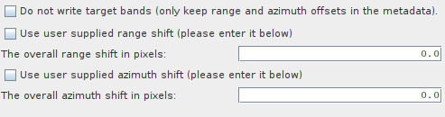
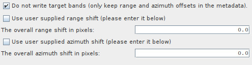
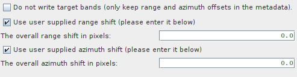

| Enhanced Spectral Diversity |
|
This operator implements the Network Enhanced Spectral Diversity (NESD) method for TOPS coregistration [1]. It performs the joint coregistration of a Sentinel-1 stack by creating a network (graph) of images and then estimating range and azimuth offsets by solving an optimization problem. This operator estimates rigid azimuth and range offsets (i.e., constant for each image) with respect to a reference image considering the offsets of multiple secondary-secondary pairs. Note that, in this context, an image corresponds to the whole sub-swath of a split S-1 SLC.
NESD first creates a network of images in which nodes represent the images in the stack and arcs represent image-pair offsets (either range or azimuth). Then, rigid image offsets are computed by integrating the image-pair offsets.
For the range integration network, image-pair offsets are estimated by using incoherent cross-correlation. The
estimation is done for each burst using a small block of data in the center of the burst. The estimates from all
bursts are then averaged to get the final constant range offset for the whole sub-swath.
For the azimuth integration network, image-pair offsets are estimated by using the Enhanced Spectral Diversity (ESD)
method [2]. The ESD approach exploits the data in the overlap areas of adjacent bursts. The estimation is done
for a number of windows in
every overlap area and the final azimuth offset is obtained by one of the following two estimation methods:
a periodogram or by averaging all the estimations. Both estimation methods are presented in [2].
The integrated range and azimuth shifts are saved in both the metadata of the output product
and in a pair of json files [swath]_range_shifts.json and [swath]_azimuth_shifts.json, where [swath]
is the name of the corresponding swath for a stack. Also, azimuth shifts for each image pair are stored in
ASCII files named with the suffix _azimuth_shift.txt. These files can be found in the user's
\.snap\var\log directory.
Finally, the operator applies range and azimuth shifts to every burst using the range and azimuth offsets estimated above.

Depending on the amount of images available and your computational resources, there are two possible workflows for
applying the joint coregistration.
First apply Back Geocoding. In the menu choose:
Radar > Coregistration > S1 TOPS Coregistration > S-1 TOPS Back Geocoding.
Then apply Spectral Diversity. In the menu choose:
Radar > Coregistration > S1 TOPS Coregistration > S-1 TOPS Enhanced Spectral Diversity.
This will produce a coregistered stack.
Options for ESD should be set as follows:

It is recommended to use the ProductSet-Reader in combination with Back Geocoding and Enhanced Spectral Diversity.
This method should be preferred for small stacks, where the meaning of small will depend on your computational resources. If your resources are not enough to (timely) complete the execution, you might want to try the distributed workflow.
This worklfow has two stages.
For this stage, you have to execute Back Geocoding followed by Enhanced Spectral Diversity without writing the target bands. In the GUI
you can do this through the menu:
Radar > Coregistration > S1 TOPS Coregistration > S-1 TOPS Joint Coregistration (write shifts to file).
Make sure that the option Do not write target bands is selected:

It is recommended to use a smaller tile size in the azimuth direction (i.e., the tile height) so that wasteful processing is minimized when Back Geocoding is applied to burst overlaps (note that we are assuming Back Geocoding and Enhanced Spectral Diversity are included in the same graph). For example, this can be configured when calling GPT by passing -Dsnap.dataio.reader.tileWidth=500 -Dsnap.dataio.reader.tileHeight=75 as parameters.
If you are editing the graph' xml file, set doNotWriteTargetBands to false.
Once the Enhanced Spectral Diversity operator finishes, the range and azimuth shifts will be available in the [swath]_range_shifts.json and [swath]_azimuth_shifts.json files.
Apply Back Geocoding and Enhanced Spectral Diversity for each reference-image specifying the range and azimuth shifts
computed in stage 1. You can look them up in the json files. Please note that you must use the same
reference image as in stage 1. In the, GUI you can specify the shifts as follows:

If you editing the graph's xml file, set useSuppliedRangeShift and useSuppliedAzimuthShift to true; and useSuppliedRangeShift and useSuppliedAzimuthShift to the corresponding shifts.
Note that, as the application of shifts are independent for each reference-secondary pair, stage 2 can be executed in parallel (in different processing nodes).